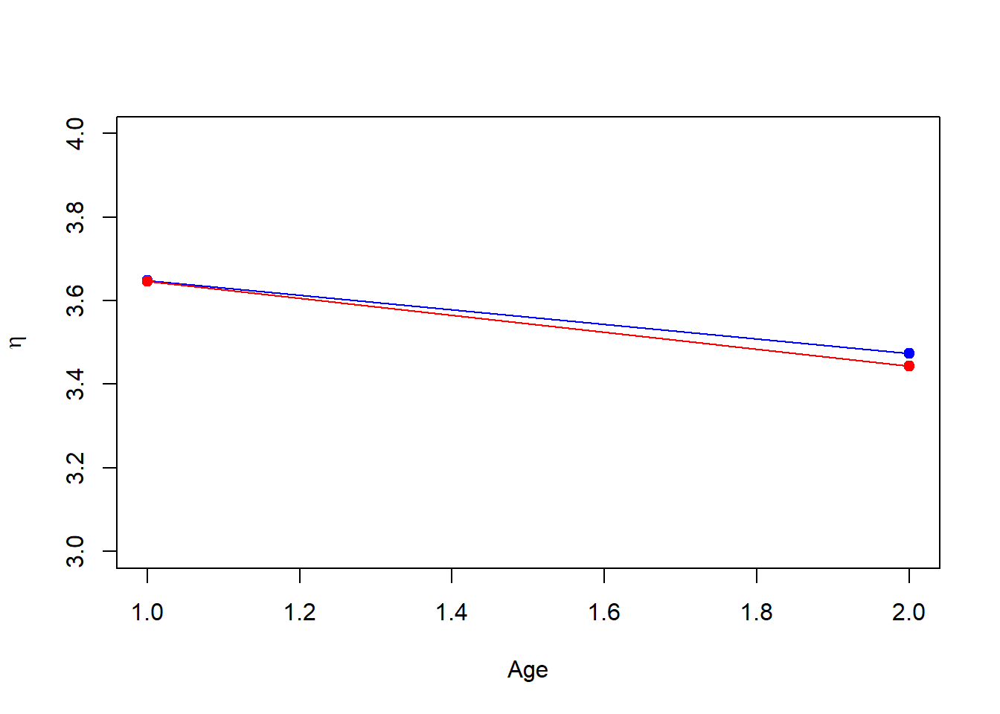

LaplacePo<-function(y,E0,V0,tol=1E-5,n=20)
{#MF 04/10/18
z0<-E0
d<-1
for (i in 1:n)
{if (abs(d)>tol)
{ez<-exp(z0)
f<-y-(z0-E0)/V0-ez
fd<--(1/V0)-ez
d<-f/fd
z0<-z0-d
}
}
mean<-z0
var<- -1/fd
return(list(E1=mean,V1=var))
}
LaplacePo(y=33,E0=3.384,V0=0.034,tol=1E-5,n=20)$E1
[1] 3.442737
$V1
[1] 0.01647875E0_eta<-c(3.384,3.384)
V0_eta<-matrix(c(0.0340,0.0085,0.0085,0.034),ncol=2)
V0_eta [,1] [,2]
[1,] 0.0340 0.0085
[2,] 0.0085 0.0340E1_eta<-c(3.646,3.443) ### non-conjugate Laplace method.
V1_eta<-c(0.0148,0.0165) ### non-conjugate Laplace method.
cov01<-V0_eta[,1]
cov10<-t(cov01)
E1_eta.given.x1<-E0_eta+(1/V0_eta[1,1])*(E1_eta[1]-E0_eta[1])*cov01
E1_eta.given.x1[1] 3.6460 3.4495cov02<-V0_eta[,2]
cov20<-t(cov02)
E1_eta.given.x2<-E0_eta+(1/V0_eta[2,2])*(E1_eta[2]-E0_eta[2])*cov02
E1_eta.given.x2[1] 3.39875 3.44300V1_eta.given.x1<-V0_eta-(1/V0_eta[1,1])*cov01%*%cov10+(V1_eta[1]/V0_eta[1,1]^2)*cov01%*%cov10
V1_eta.given.x1 [,1] [,2]
[1,] 0.0148 0.0037
[2,] 0.0037 0.0328V1_eta.given.x2<-V0_eta-(1/V0_eta[2,2])*cov02%*%cov20+(V1_eta[2]/V0_eta[2,2]^2)*cov02%*%cov20
V1_eta.given.x2 [,1] [,2]
[1,] 0.03290625 0.004125
[2,] 0.00412500 0.016500aa<-solve(V1_eta.given.x1)
bb<-solve(V1_eta.given.x2)
ss<-solve(V0_eta)
dd<-aa+bb-ss
dd [,1] [,2]
[1,] 69.528352 -7.843137
[2,] -7.843137 62.566845V2_eta.given.x<-solve(dd)
V2_eta.given.x [,1] [,2]
[1,] 0.014588921 0.001828811
[2,] 0.001828811 0.016212159betwbrac<-aa%*%E1_eta.given.x1+bb%*%E1_eta.given.x2-ss%*%E0_eta
E2_eta.given.x<-V2_eta.given.x%*%betwbrac
E2_eta.given.x [,1]
[1,] 3.648803
[2,] 3.474346Age<-c(1,2)
plot(Age,E2_eta.given.x,ylab=expression(eta),type="o",pch=19,col=4,ylim=c(3,4)) #### Bayes linear kinematics
lines(Age,E1_eta,col=2,ylab=expression(eta),pch=19,type="o") #### full- Bayes analysis